Sky Race
A full-CGI commercial for auto.ru and EKB Stance Meet 2026Полностью CGI-ролик для auto.ru и EKB Stance Meet 2026
A red branded airplane flies above the clouds. Inside its cargo bay sit three high-powered sports cars. The cars rev up, burning rubber and releasing smoke. The cargo hatch opens, sending the cars plummeting into free fall until their parachutes deploy, bringing them to a smooth landing inside the Ekaterinburg Arena stadium.Красный брендированный самолёт летит над облаками. Внутри его грузового отсека — три мощных спорткара. Машины срываются с места, выпуская дым. Люк открывается, и автомобили вылетают в свободное падение, раскрывают парашюты и приземляются на стадион «Екатеринбург Арена».
What I didЧто я делалArt direction, storyboard, modeling, blocking, animation, simulation, lighting, rendering, compositingАрт-дирекшн, раскадровка, моделинг, блокинг, анимация, симуляции, свет, рендер, композ
StoryboardРаскадровка
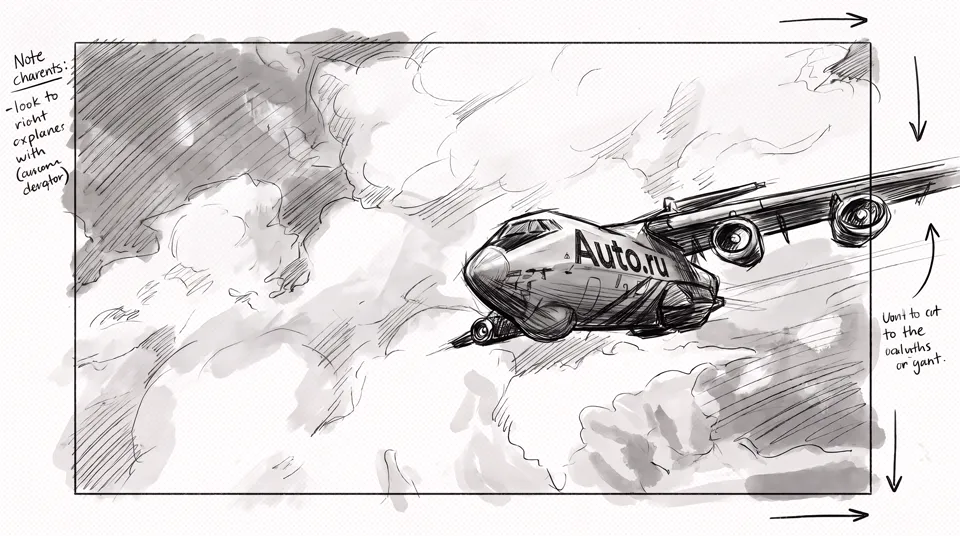
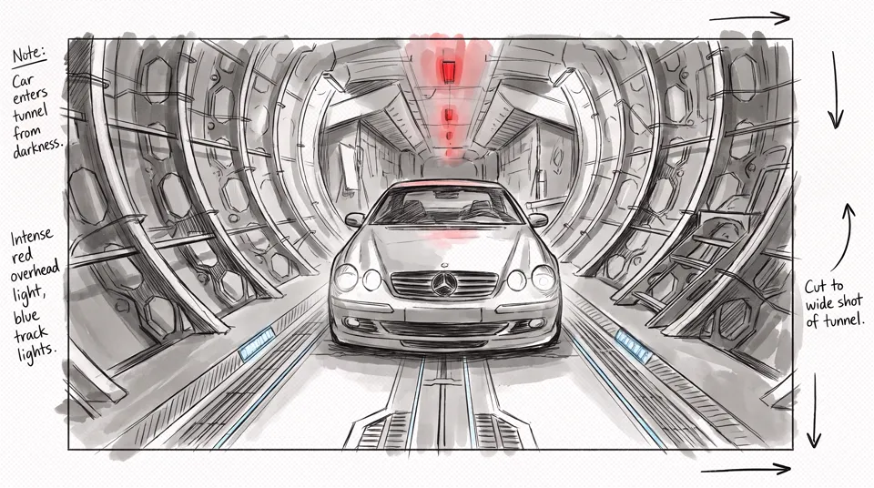
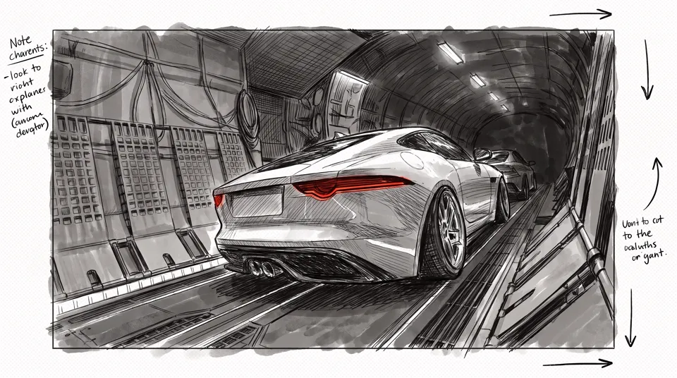
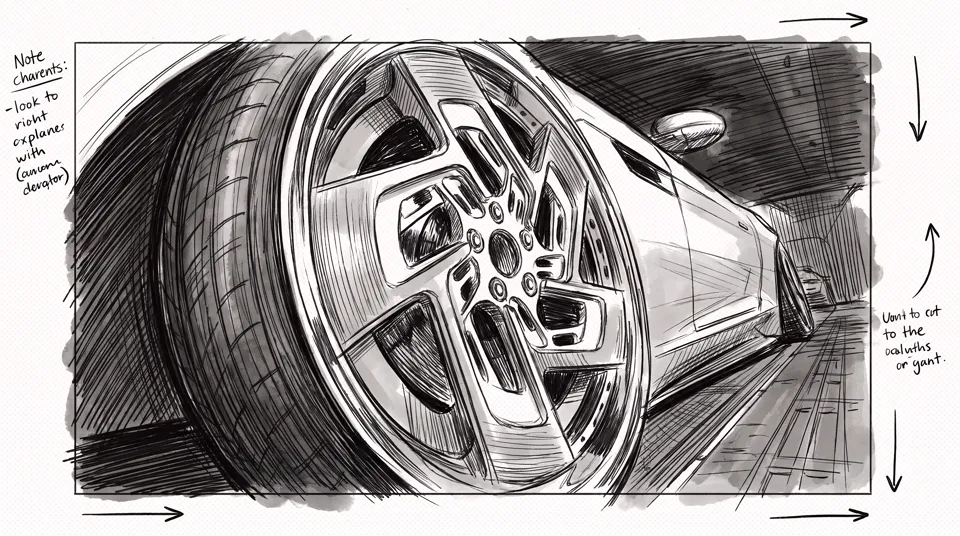
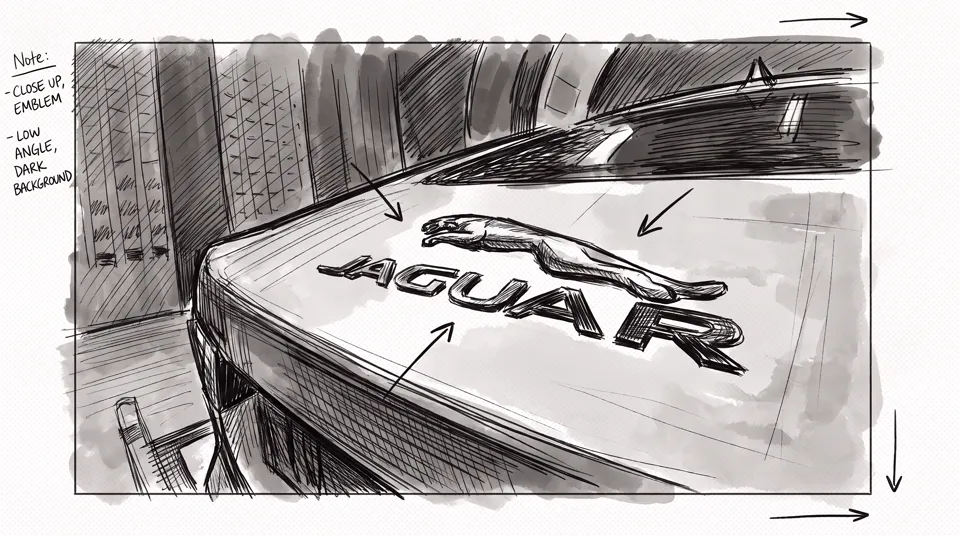
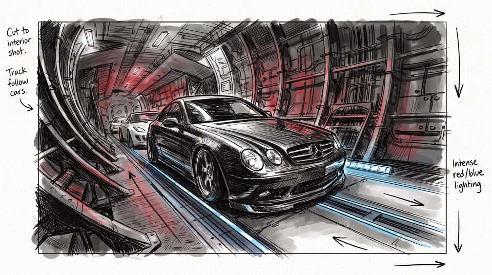
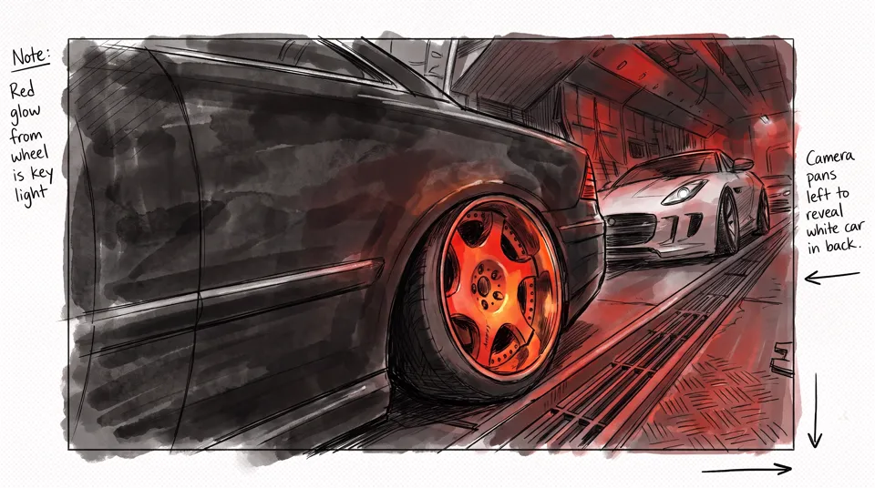
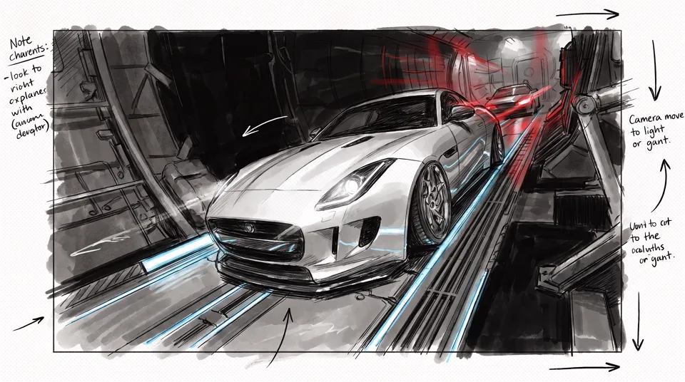
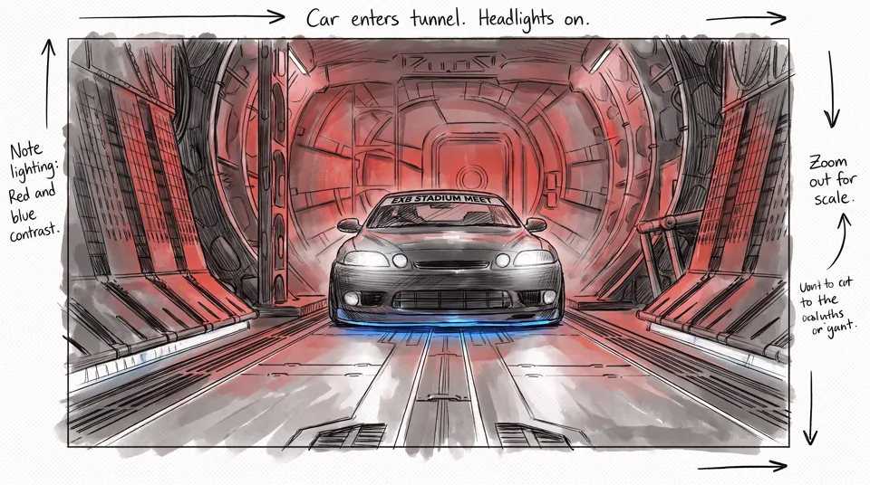
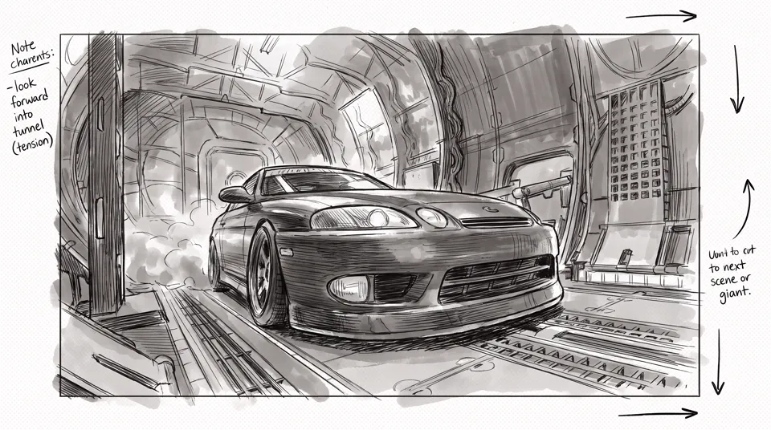
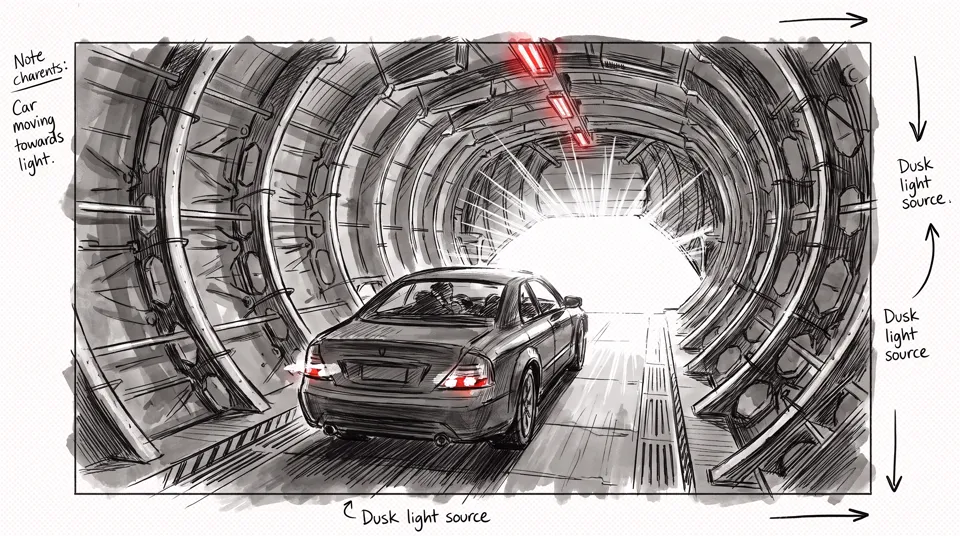
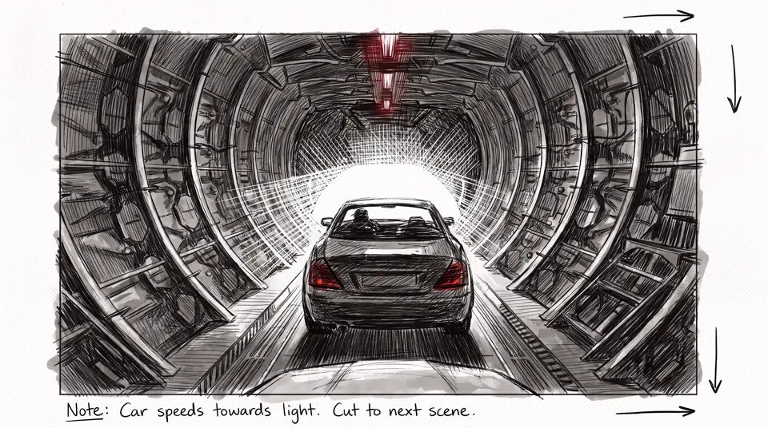
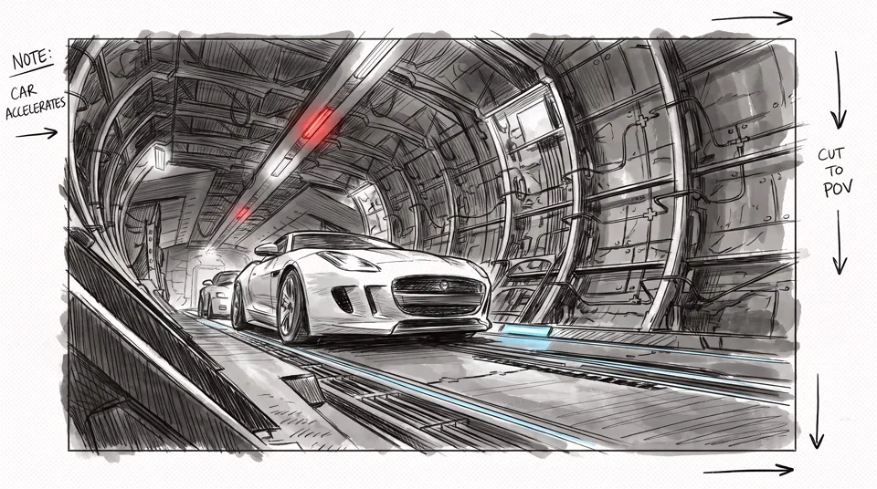
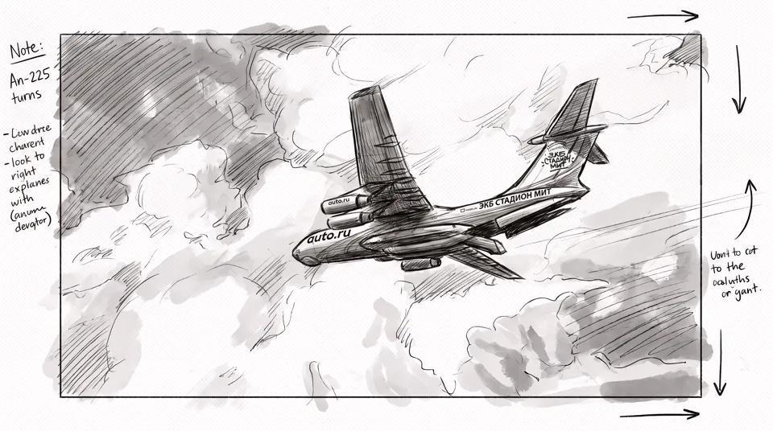
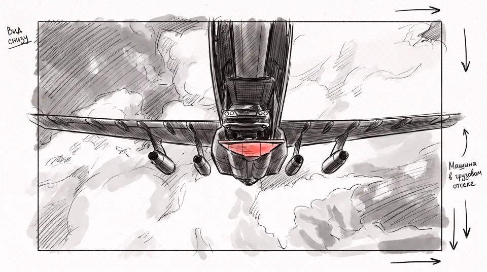
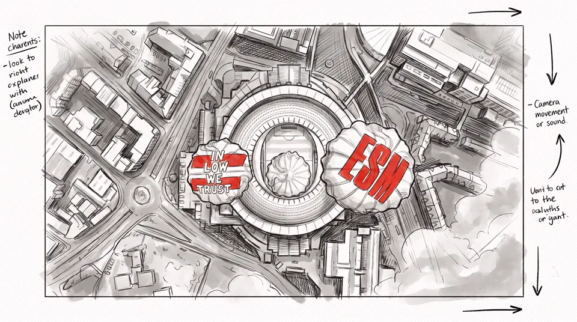
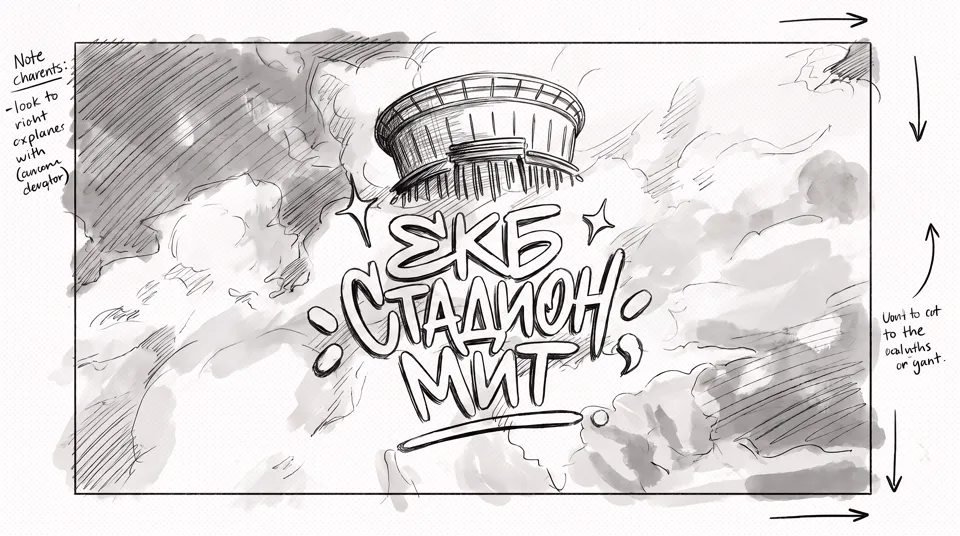
The briefЗадача
The goalЗадача
- Introduce the new event projects in a rugged, high-octane style that captivates the lowered-car communityЯрко представить новые проекты мероприятия в дерзком, брутальном стиле, чтобы привлечь внимание фанатов заниженных авто
- Place three cars in settings far from the usual asphalt roadsПогрузить три автомобиля в нестандартные локации за пределами привычного городского асфальта
- Make a full cinematic product that moves away from standard ad tropes and speaks to a younger audienceСоздать полноценный кинопродукт без шаблонных рекламных штампов, понятный и близкий молодой аудитории
The challengesСложности
- Refine every vehicle shader and material, with the custom builds detailed to the boltУсовершенствовать шейдеры и текстуры автомобилей с акцентом на детально проработанные кастомные проекты
- Build three locations that set and carry the film’s cinematic moodСоздать три уникальные среды, передающие общую кинематографичную атмосферу видео
- Model three real cars in high detailВоссоздать подробные 3D-модели реально существующих автомобилей
- Light a dramatic dusk sky and the dim interior of a cargo plane before the dropНастроить освещение, передающее вечернее небо и полумрак внутри грузового отсека перед сбросом
- Simulate realistic tyre smoke during launches and burnoutsВоссоздать реалистичную симуляцию дыма из-под колёс при дрифте и старте с места
- Animate cameras that feel aerial, handheld, plane-mounted and stabilisedАнимировать движения камер, имитируя съёмку с воздуха, с рук, с корпуса самолёта и динамический трекинг
ModelingМоделинг
Jaguar F-Type 2014
High-poly model of the body, custom 19" wheels and an aero kit by Maxton Design.High-poly моделирование кузова, кастомных 19-дюймовых дисков и элементов обвеса от Maxton Design.
Toyota Soarer Z30
A full build on 19" Work CR2P wheels, with a Vertex body kit, a Big Win front lip and a Shotgun dual exhaust.Детальное моделирование кузова, 19-дюймовых дисков Work CR2P, обвеса Vertex, губы Big Win и выхлопной системы Shotgun.
Mercedes-Benz CL W215
On 19" Weds Kränze Bazreia wheels, with Brabus front and rear lips, a roof spoiler and a custom exhaust.Моделирование кузова, 19-дюймовых дисков Weds Kränze Bazreia, передней и задней накладок Brabus, спойлера на крышу и выхлопа.
Lighting the holdСвет в отсеке
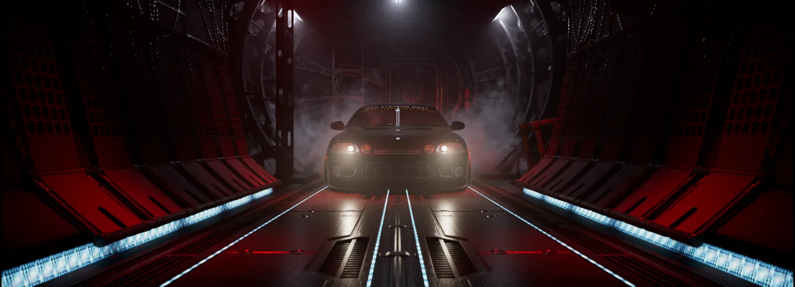
The scenarioСценарий
Above the cloudsНад облаками
Shot 1. The camera pushes out of the clouds as the co-branded aircraft (auto.ru & ESM 2026) streaks past and flies off toward the horizon.Кадр 1. Камера вылетает из облаков, навстречу ей проносится брендированный самолёт (auto.ru & ESM 2026) и уходит за горизонт.
In the cargo holdВ грузовом отсеке
Shots 1–7. Slow orbiting moves over the details of cars one and two: custom wheels, headlights, trunk badging. Pulsing red alarm lights reveal the textures, and a slight shake keeps the tension of a hold in flight.Кадры 1–7. Плавные облёты камеры по деталям первой и второй машины: кастомные диски, оптика, шильдики. Пульсирующий красный свет тревоги проявляет фактуру, а лёгкая вибрация передаёт напряжение полёта.
The burnout and the dropБёрнаут и сброс
Shots 8–13. Car three locks into a burnout under studio lights and heavy camera shake. Sunlight breaks in as the hatch swings open, and the three cars race down the ramp into free fall.Кадры 8–13. Третья машина уходит в агрессивный бёрнаут под вспышки света и жёсткую вибрацию камеры. Люк открывается, в отсек врывается солнце, и все три машины срываются по рампе в свободное падение.
Over the arenaНад ареной
Shot 1. The cars plummet toward the Ekaterinburg Arena against the city skyline, branded parachutes open, and the camera tumbles on its axis as it dives.Кадр 1. Машины падают к «Екатеринбург Арене» на фоне панорамы города, раскрываются брендированные парашюты, камера вращается вокруг своей оси и пикирует вниз.
How it beganС чего всё началось
The inspirationВдохновение
I was inspired by complex projects that merge motion design, simulation, storytelling and strong brand positioning. Browsing Behance, I saw that projects of this scale are made almost only by full-service studios and large teams.Меня всегда вдохновляли комплексные проекты, объединяющие 3D-анимацию, VFX-симуляции, сторителлинг и чёткую концепцию. Листая Behance, я понимал, что за работами такого масштаба почти всегда стоят целые студии и большие команды.
The solo challengeСоло-вызов
I set out to step far out of my comfort zone and take full creative and technical ownership of every single stage, completely solo.Я решил выйти из зоны комфорта, принять этот вызов и пройти весь путь соло, взяв на себя полную ответственность за каждый этап производства.
Problems solvedПроблемы и решения
Tyre smokeДым из-под колёс
The problemПроблема
For the Soarer’s burnout I could not get realistic tyre smoke out of Unreal Engine’s Niagara: density and quality fell short of cinematic.Во время работы над бёрнаутом Toyota Soarer Niagara (Unreal Engine) не давал нужного качества и плотности дыма из-под колёс.
The solutionРешение
I moved the smoke to EmberGen. After many iterations on the fluid dynamics it reached the dense, high-quality simulation the shot needed.Я перенёс симуляцию в EmberGen. После серии тестов и настройки флюидов удалось добиться нужной реалистичности и высокого качества дыма.
ContrailsИнверсионные следы
The problemПроблема
I wanted the condensation trails behind the airplane to look accurate as it cuts through the sky.Я поставил задачу реалистично воссоздать белые конденсационные следы, тянущиеся за самолётом в небе.
The solutionРешение
I generated and tuned the jet trails with Unreal Engine’s Niagara particle system.Эффект удалось воссоздать и настроить с помощью системы частиц Niagara в Unreal Engine.
CloudsОблака
The problemПроблема
Volumetric VDB clouds across the whole sky made the scene heavy and the frame rate collapse.Создание реалистичных объёмных облаков в небесной сцене с помощью VDB-ассетов сделало проект слишком тяжёлым и ресурсоёмким.
The solutionРешение
Detailed VDB clouds stay only in the foreground and in direct camera view; Ultra Dynamic Sky volumetrics fill the rest.Детальные VDB-облака остались только на переднем плане и в прямой видимости камеры, остальное пространство заполнили объёмные облака Ultra Dynamic Sky.
StillsСтиллы
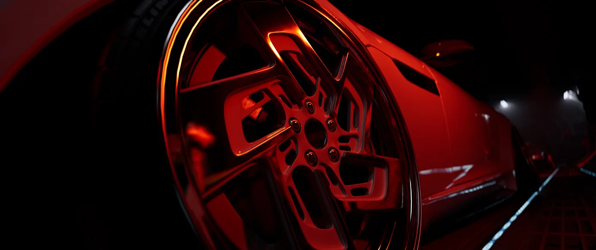
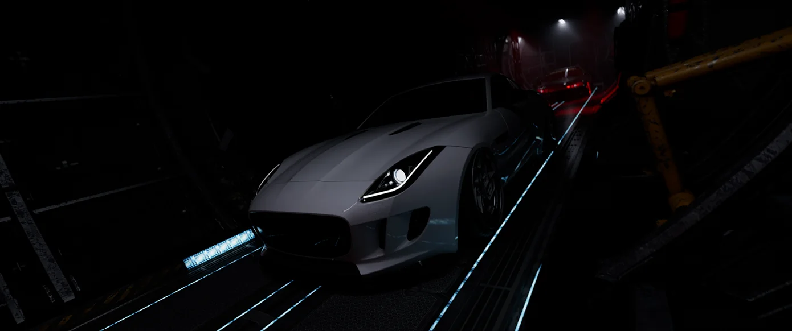
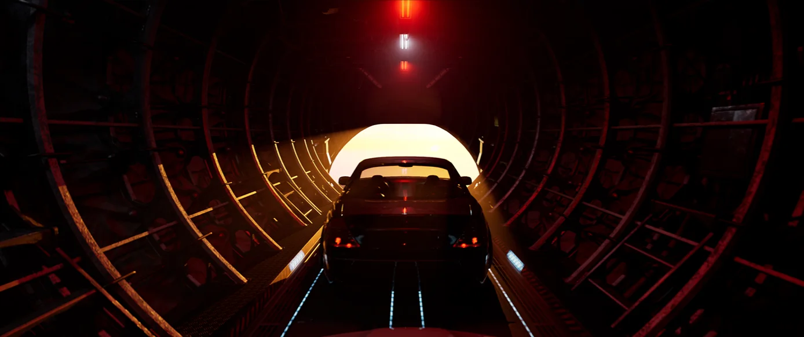
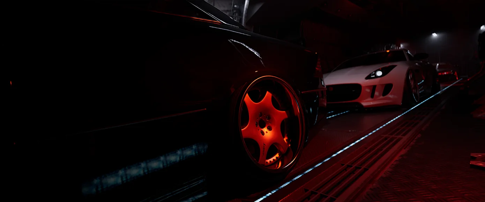
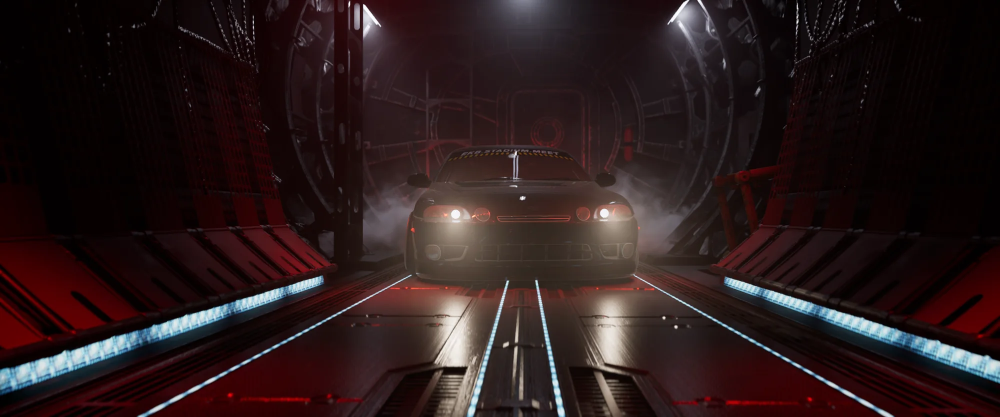
Thanks for watchingСпасибо за просмотр
Every frame of this film, from the storyboard to the final comp, was made by one person. More of the work is on the main page.Каждый кадр этого фильма, от раскадровки до композа, сделал один человек. Остальные работы на главной.